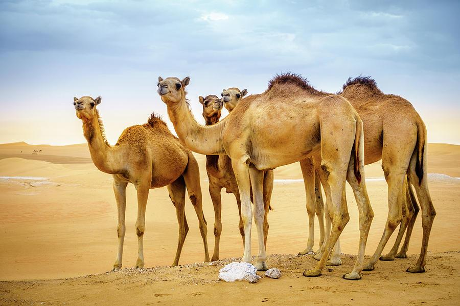

Unit 6 Overview
Evolution is the idea that ties biology together. Once you can explain how populations change over time, everything you have studied this year becomes one story: the chemistry of cells, how energy moves, how ecosystems hold together and how traits are inherited.

Evolution is a change in the inherited characteristics of a population across generations. Populations evolve; individuals do not. Holding on to that sentence clears up most of the confusion in this unit. Come back to it whenever an explanation stops making sense.
How the five standards fit together
This unit is built on five NGSS performance expectations. They form one argument, built in order. Each chapter takes one of them, and the highlighted words show the skill each one asks for.
- HS-LS4-1: How do we know living things share common ancestors?
- HS-LS4-2: What is the mechanism that causes populations to change?
- HS-LS4-3: What does that change actually look like in data?
- HS-LS4-4: How does that produce adaptation, and eventually new species?
- HS-LS4-5: What happens when the environment changes?
Notice the shape of the argument. 6.1 establishes that evolution happened. 6.2 explains how. 6.3 shows you what the evidence looks like as numbers. 6.4 follows the process to its consequences. 6.5 asks you to judge evidence about what happens when conditions change, including the changes humans are causing now.
The two crosscutting concepts
Each standard comes with a crosscutting concept. It tells you what kind of thinking that part of the unit asks for.
- Patterns (6.1 and 6.3): you are looking for regularities across many separate observations, and asking what could explain all of them.
- Cause and effect (6.2, 6.4 and 6.5): you are building mechanisms and being careful about what actually causes what. Many weak answers about evolution point to a correlation and call it a cause.
Three phrasings come up again and again. All three are habits of everyday speech rather than real misunderstandings:
"The species adapted so that it could survive." Nothing adapts in order to do anything. Variation already exists; the environment filters it.
"The giraffes stretched their necks and passed it on." Traits acquired during a life are not inherited. Only heritable variation matters.
"Evolution is just a theory." In science a theory is an explanation supported by a large body of evidence. It is the strongest thing an idea can become, not a guess.
Before you start 6.1, think of an organism that is very well suited to where it lives. Write one sentence explaining how it got that way. Keep it, and at the end of the unit read it again to see whether you would still write it the same way.
Learning targets for the unit
These are the unit's "I can" statements, grouped by standard. Use them as a checklist. The number after each one is the chapter that teaches it.
Evidence of common ancestry
- I can analyse and identify patterns from multiple lines of evidence: fossil record, molecular biology, comparative anatomy, embryological development and biogeography.
- I can use reasoning to make connections between each line of evidence and the claims of common ancestry and biological evolution.
- I can create and interpret a cladogram showing how a group of organisms most likely diverged from a common ancestor.
Four factors of natural selection
- I can identify the four factors that drive evolution.
- I can use a variety of evidence, past and present, to support that natural selection drives biological evolution.
- I can explain the cause-and-effect relationship between genetic variation, differential reproduction and survival, and the evolution of populations that express the trait.
Adaptation of populations
- I can analyse and interpret data to explain the changes in the distribution of traits in a population over time.
Natural selection leads to adaptation
- I can analyse the benefits of various plant and animal adaptations.
- I can explain how natural selection results in organism adaptations.
- I can synthesise evidence for how natural selection acts on specific biotic and abiotic differences in ecosystems, leading to change over time and the adaptation of populations.
Environmental change, speciation and extinction
- I can evaluate evidence of cause-and-effect relationships for how changes to the environment affect the distribution or extinction of traits in species.
- I can analyse the effects of drought, flood, deforestation, use of fertilisers and overfishing on populations.
- I can explain how environmental factors can influence the ability of individuals of a species to survive and reproduce.
- I can analyse the influence environmental changes have on the number of individuals in a species and the formation or extinction of species.
What you will actually do
Each chapter has at least one interactive where you do the thinking in its learning targets instead of reading about it: sort, date, build, match and run. Commit to an answer before you check it, because writing a prediction down makes you think it through.
- 6.1 Date the split: use differences in a molecule to work out when two groups last shared an ancestor.
- 6.1 Classify, then build a cladogram: sort a group of carnivores, then draw the tree that best explains them.
- 6.2 VIDA match: put each step of a real case of selection under the right factor.
- 6.3 Selection on beak depth: push a population and watch the distribution of a trait shift.
- 6.4 Sort the mammals: two groups, six ways of making a living, and what the match-ups mean.
- 6.4 Drift and bottlenecks: run eight identical populations, then squeeze one through a bottleneck.
- 6.5 Can the population keep up? Change the environment and see whether the population adapts, moves or is lost.
The unit, lesson by lesson
The unit runs over fourteen lessons and three anchor guides. This table maps the taught sequence onto the chapters of this reader, so you can find the reading that goes with any lesson, or catch up on one you missed. The reader follows the standards, with one chapter per performance expectation, while the lessons mix them. So one lesson sometimes spans two chapters, and one chapter sometimes covers several lessons.
| Lesson | Anchor guide | In class | Read |
|---|---|---|---|
| 1 | 6.1 | Camel anchor phenomenon; the five lines of evidence; analysing amino-acid sequences | 6.1 The claim |
| 2 | 6.1 | Molecular clocks; the fossil record; Barbellus family tree | 6.1 Fossils molecules |
| 3 | 6.1 | Comparative anatomy: homologous, analogous, vestigial; cladograms; classification | 6.1 Anatomy cladograms |
| 4 | 6.1 | Biogeography and the Wallace Line; embryology; whale case study | 6.1 Biogeography embryology |
| 5 | 6.1 → 6.2 | What natural selection is; VIDA introduced | 6.2 Four factors VIDA |
| 6 | 6.2 | VIDA with bunnies; antibiotic resistance; natural vs artificial selection; what is random | 6.2 Randomness antibiotics |
| 7 | 6.2 | Lampsilis mussel; the six data-analysis case studies | 6.2 Mussels 6.3 Case studies |
| 8 | 6.2 | Tuskless elephants case study | 6.3 Is it selection? |
| 9 | 6.2 | Tuskless elephant argumentation; adaptations and selection pressures; cave organisms; anole investigation design | 6.3 Argument 6.4 Adaptation |
| 10 | 6.2 | Convergent and divergent evolution; sexual selection; black widow spider investigation | 6.4 Convergent sexual selection |
| 11 | 6.2 | Bringing HS-LS4-1, HS-LS4-2 and HS-LS4-3 together | 6.1 6.2 6.3 |
| 12 | 6.3 | Five fingers of evolution; what is a species; reproductive barriers; apple and hawthorn flies | 6.4 Species 6.5 |
| 13 | 6.3 | Genetic drift, bottleneck and founder effects, gene flow; HS-LS4-5; Norfolk Island robins | 6.4 Drift 6.5 Robins |
| 14 | 6.3 | Human evolution and chromosome 2; extinction and mass extinctions | 6.5 Humans extinction |